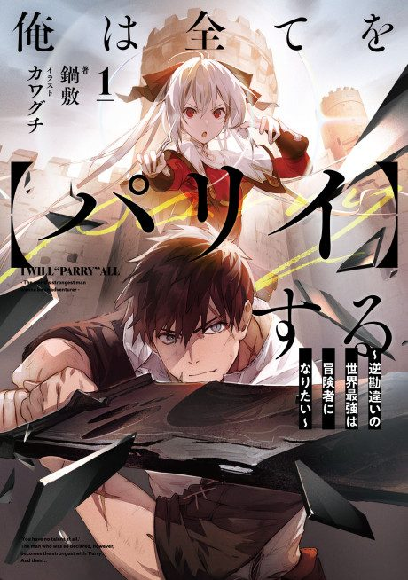

I Parry Everything
俺は全てを【パリイ】する ～逆勘違いの世界最強は冒険者になりたい～
The anime takes the story to Not checked.
6.8AniList score
—Animeter, no votes yet
12episodes
Anime finished. Where does the story pick up?
StatusNot checked yet
We haven't checked where the anime ends in the light novel yet. The light novel is still running.